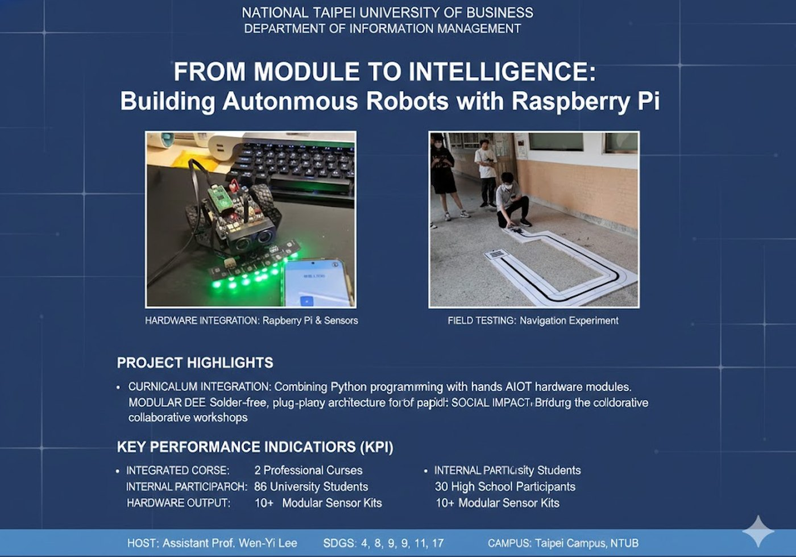

這張是真實教室情境，和目前網站的教師區定位一致：老師先投影示範，再讓學生跟著操作。
Teacher Zone
這一頁是老師的授課控制台。你可以從這裡知道課前先看什麼、上課先示範什麼、下載順序怎麼排， 也能快速判斷第一堂課哪些內容先不要帶進來。
這張是真實教室情境，和目前網站的教師區定位一致：老師先投影示範，再讓學生跟著操作。
Real Teaching Context
我把參考素材裡最能對應現在教學主線的照片放進來，幫教師區多一點真實感，而不是只剩文字流程。

老師先示範程式操作，再讓學生開始輸入 `W / A / S / D / X`，這和目前 Boot Camp 的節奏完全一致。

小組操作時，學生通常會一邊看電腦、一邊看小車反應。教師區現在就是在幫你把這個過程簡化成穩定流程。
Teacher Console
教師區先幫你決定這一堂課的完成線、下載順序和不需要帶進來的內容，讓授課節奏更像一個成熟的教學產品，而不是把所有素材一次丟給學生。
Before Class
In Class
先讓學生看到電腦真的能把指令送到車子，這是整堂課最重要的第一步。
先把前進、後退、左轉、右轉、停止操作熟，不需要同一堂課再帶更多功能。
這堂 Boot Camp 的完成線，就是學生可以用鍵盤控制車子，不必再加感測器與循跡。
Download Order
After Class
這段真實影片很適合拿來告訴老師：第一堂課先把 Pico 小車連好、動好，後面就能自然銜接到循跡活動。

這張照片很適合拿來告訴老師：第一堂課先穩穩完成基本控制，後面就能自然延伸到循跡活動。

這份海報很適合放在老師區，讓備課者看到這門課不只是一堂體驗，也能慢慢發展成完整專題。